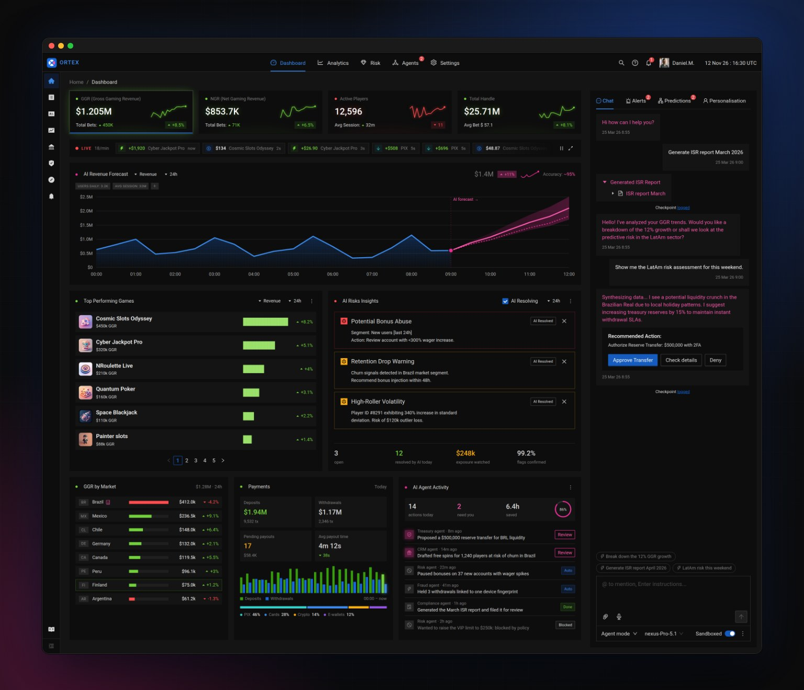
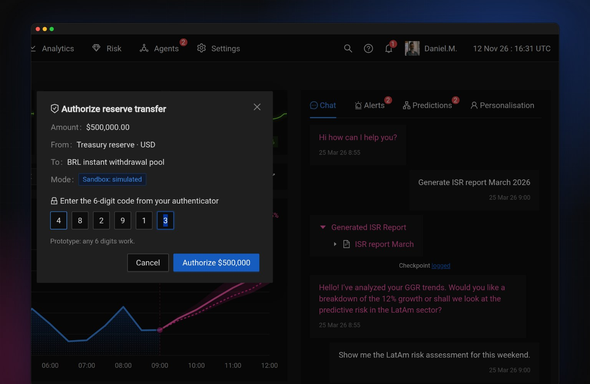
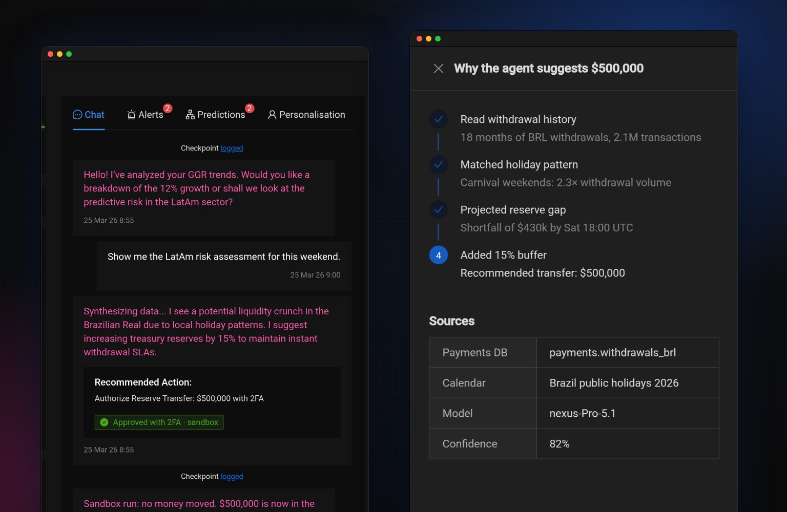
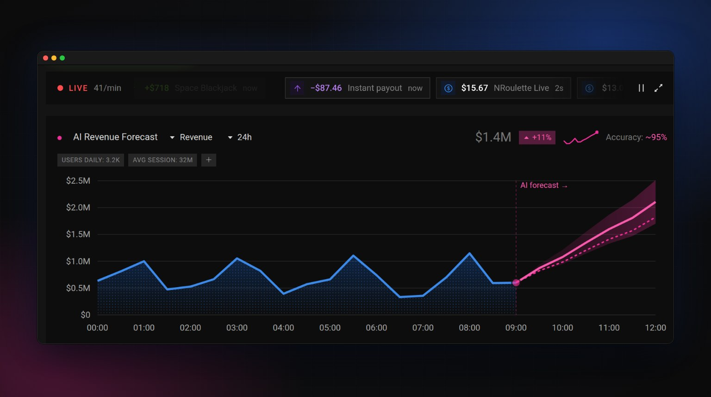
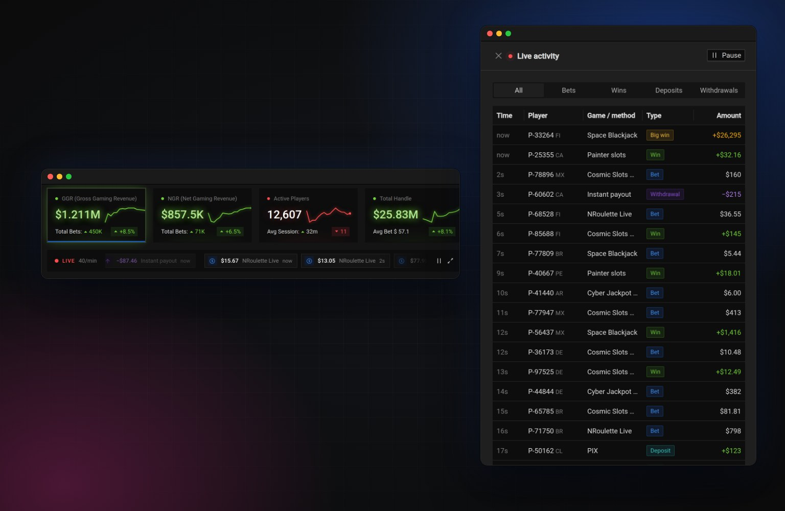
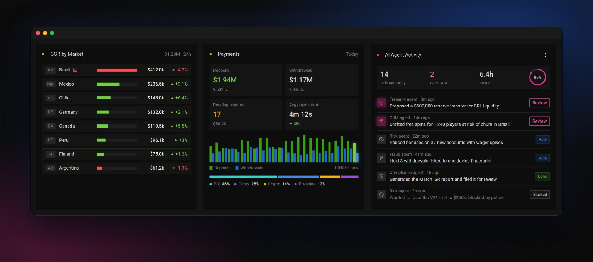
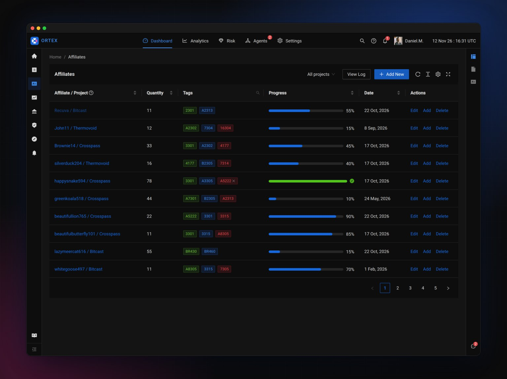
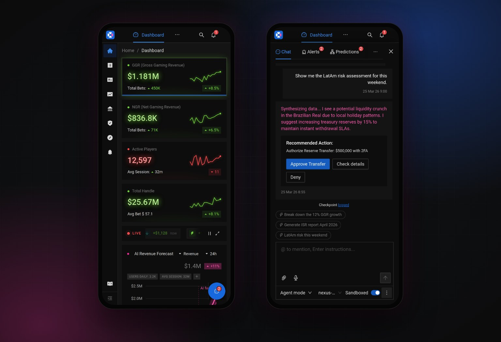

A concept for an iGaming back office with an AI agent that watches the numbers and suggests what to do. It can propose moving money, but it can't move a cent until a person approves with 2FA.
Try the prototype
Role
Concept, UX, UI and front-end prototype
Tools
Figma, Ant Design 5, React, Claude Code
Type
Personal concept. All data is fictional.
After years of designing casino and jackpot back offices, I kept seeing the same pattern: operators spend their day watching numbers and reacting to them. An AI agent can do the watching. The hard part is the reacting: in a business that moves real money, nobody wants a bot that acts on its own.
So Ortex asks one question: how much can an agent do for an operator while the operator stays in charge of every decision that matters?
The copilot spots a liquidity risk for a Brazilian holiday weekend and recommends moving $500,000 into the withdrawal pool. It shows the recommendation as a card with three clear choices, and nothing happens until someone picks one.

Approve needs 2FA
The dialog repeats the amount, source, destination and mode, so the person confirms exactly what will happen.
Every decision leaves a trace
Approve and Deny both add a "Checkpoint logged" line to the chat for the audit trail, and the agent says what it will do next.
"Check details" shows the reasoning
The steps the agent took, the data it read and its confidence, so the operator can challenge the number instead of trusting it blindly.
Sandbox is a visible switch
With "Sandboxed" on, approvals are simulated and labeled that way. Switching it off turns the label red: "Live".

Operators need to know at a glance what is fact and what is the machine's guess. So the interface has one rule: blue is real data and your actions, pink is anything the AI produced. The revenue chart turns pink where actuals end and the forecast begins, with a widening band for its uncertainty. The same pink marks agent messages in the chat and the AI dot on cards.

A back office for a casino is never still, and a static mockup hides that. In the prototype, bets, wins, deposits and withdrawals stream in about once a second. The KPIs move with them and flash green or red as they change, and a big win visibly dips GGR. Operators can pause the feed or open the full list with filters.

Several agents work at once: treasury, CRM, risk, fraud and compliance. The activity panel shows what each one did, and when. Each action is marked Auto, Done, Blocked by policy, or Needs you. Only the last kind gets a pink Review button, which opens the copilot. Next to it, markets and payments update with the live feed, and Brazil's drop links straight to the churn warning the agent raised.

Click Approve Transfer in the chat (any 6 digits work), ask the copilot to "Generate ISR report April", hover the chart, or open Affiliates from the left rail.
No backend: the chat is scripted and all data is simulated. The frame shows the desktop layout scaled down; full screen or a new tab shows it at full size.
I designed Ortex on Ant Design's dark theme in Figma, then built the prototype with the real antd components instead of look-alikes, with a few token overrides for color and radius. The Affiliates page shows the everyday side of the product: sorting, tag search, filters, forms with validation, confirmations and a change log that records every edit.

Building the design for real exposed things a static mockup hides. I audited the result in the browser and measured every fix.
One spacing rhythm
Three sections of the dashboard touched with no gap, and the copilot didn't line up with the first row of cards. Everything now follows three values: 16px between cards, 16px inside cards and 24px at the page edges.
Icons centered to the pixel
The navigation rail icons sat 4px off center because of the component library's default padding. All of them now measure 0px off on both axes.
Fixes from the original file
A typo in a card title and a chart axis that listed zero twice ("$0.0M" and "$0M") were caught and fixed while building.
A logo that follows the color rule
An O split by an X: the first and last letters of ORTEX. One wedge is pink, the same color the interface uses for AI.
Operators get alerts away from their desk. On a phone the KPIs stack, the copilot moves behind a floating button, and the approval flow works the same way.

I designed two key screens in Figma and built the rest directly in code with Claude, using AI as a fast engineering partner while I made the design decisions. Working in the real medium let me test the parts a picture can't show: what an approval feels like, how a live number should behave, and whether the layout holds up at every screen width.